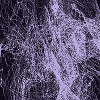
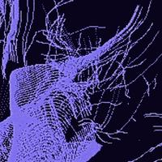

NEW YORK / BOGOTÁ
(2021)
HOW DID I GET HERE?
Traces of human progress are drawn with ones and zeros in the virtual domain.
This digital landscape emulates the idea of growth in resolution and pixelation. It exploits existence itself as a kind of game that challenges the mind to fall into the unmistakable center of purple constellations that resemble biological processes.
We become a digital particle as we fall into this universe that opens up without containment, although with millimetric variations, a visceral path on the screen, a digital prosthesis of our nervous system.
We witness the discovery of our own digital matter; we participate in the excavation of the aesthetic ruins of past generations that are lost in all the hard disks that have our mark, some lost and others treasured in the "loseless" nostalgia.
Exhibitions
Pulling Down the Heavens / SVA Galleries / New York, US / November 17, 2020
The Hitchhiker's Guide to Staying Afloat / Tutu Gallery / New York, US / May 15, 2020
Espina Santa Web Archive
This digital landscape emulates the idea of growth in resolution and pixelation. It exploits existence itself as a kind of game that challenges the mind to fall into the unmistakable center of purple constellations that resemble biological processes.
We become a digital particle as we fall into this universe that opens up without containment, although with millimetric variations, a visceral path on the screen, a digital prosthesis of our nervous system.
We witness the discovery of our own digital matter; we participate in the excavation of the aesthetic ruins of past generations that are lost in all the hard disks that have our mark, some lost and others treasured in the "loseless" nostalgia.
Exhibitions
Pulling Down the Heavens / SVA Galleries / New York, US / November 17, 2020
The Hitchhiker's Guide to Staying Afloat / Tutu Gallery / New York, US / May 15, 2020
Espina Santa Web Archive
MUSIC: NICOLÁS GÓMEZ / TEXT: JUAN MATTOS

